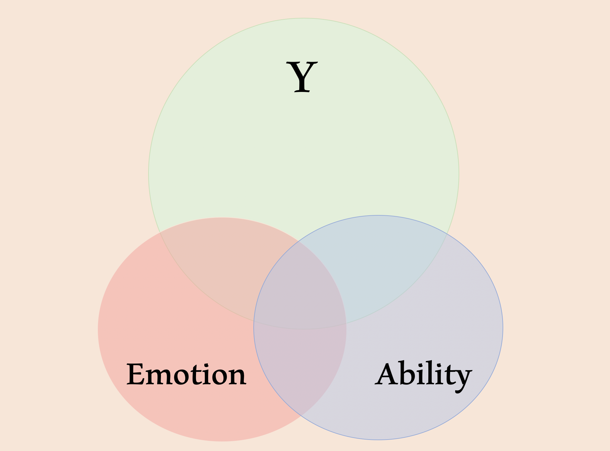
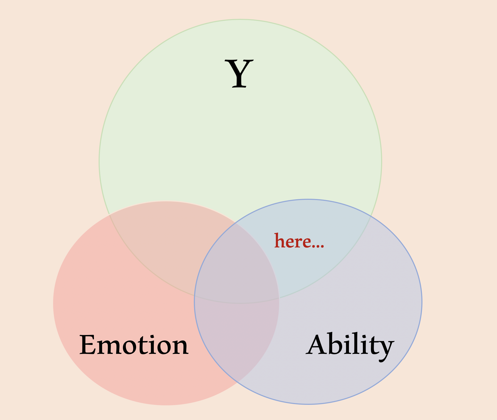
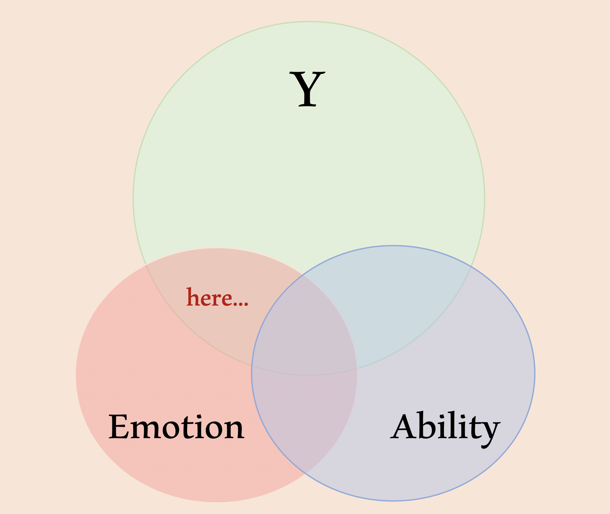
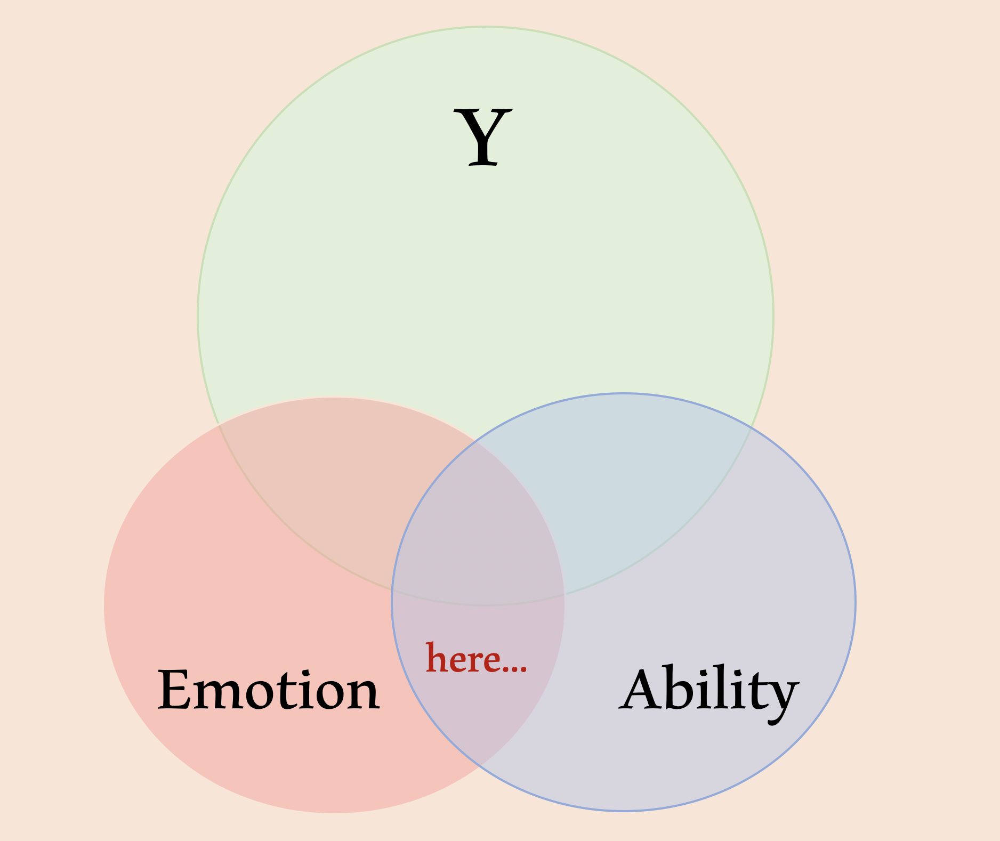
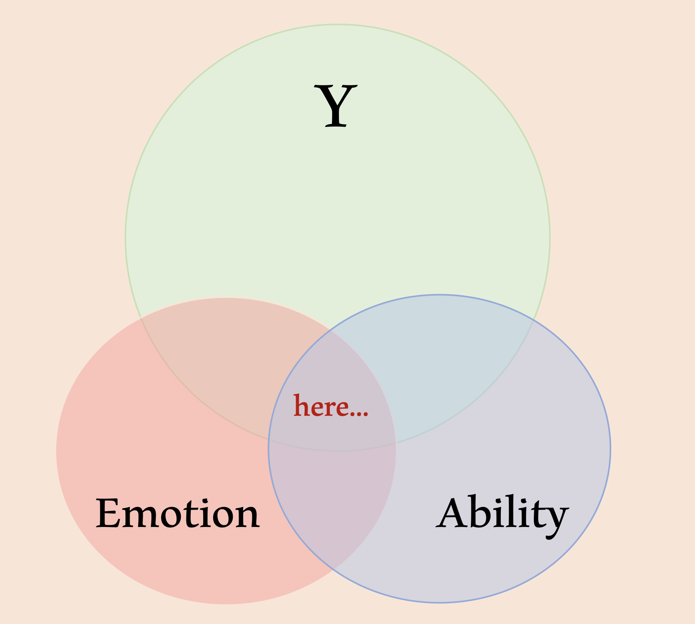
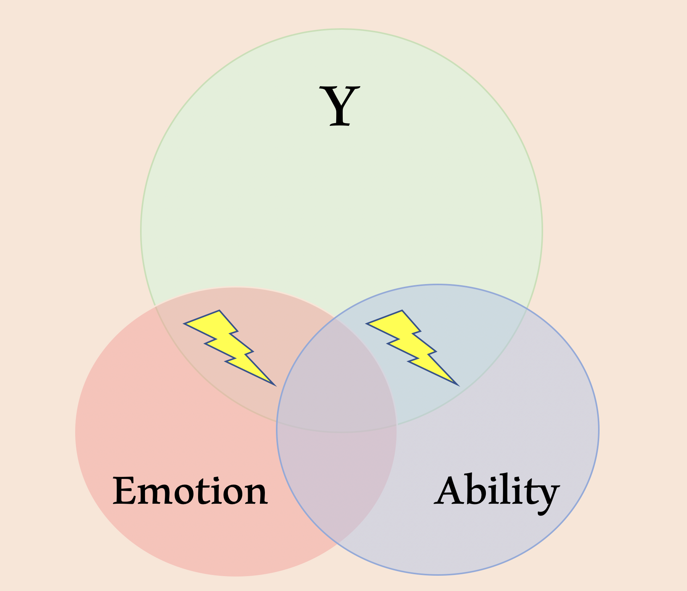
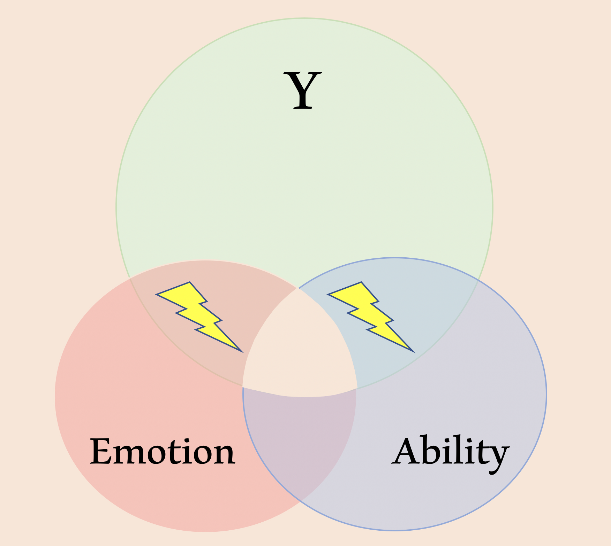
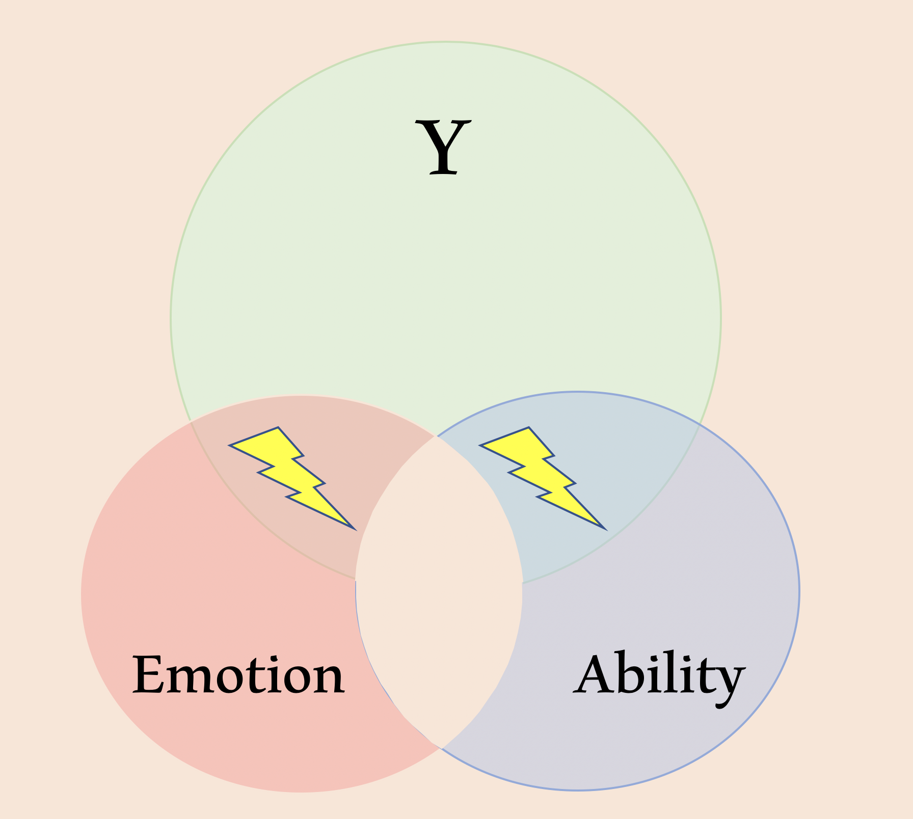
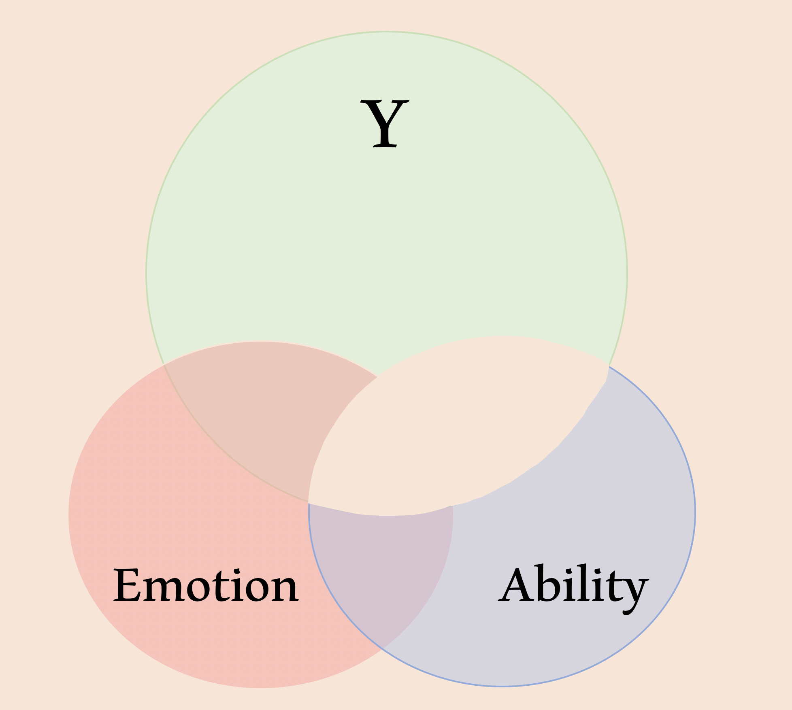

In regression, everything is partialled from everything. Let’s work through that notion with images and code. Imagine that emotion and ability cause an outcome, \(Y\).

What this image represents is that \(Y\) has variability (across people or time), and its variability is associated with variability in emotion and variability in ability. Notice that there is variability overlap between ability and \(Y\),

emotion and \(Y\),

emotion and ability,

and all three variables.

Once we regress \(Y\) on emotion and ability, the regression coefficients represent the unique variance components of each predictor

but the technique also removes outcome-relevant variance

and overlapping variance in emotion and ability not related to the outcome.

So, in regression we get coefficients that represent the unique variance contribution of each predictor while partialling overlapping, outcome-relevant variance and overlapping, non-relevant variance. Emotion and ability get to account for their own causal effects of \(Y\), but neither predictor gets the overlapping variance in \(Y\), and the emotion and ability coefficients are adjusted for the emotion-ability overlap situated outside \(Y\).
Let’s do it with code.
Our sample contains 500 people with correlated emotion and ability (\(r\) = 0.4).
people <- 500
emotion <- rnorm(people, 0, 10)
ability <- 0.4*emotion + rnorm(people, 0, 1) # could also do it with MASSAbility and emotion cause \(Y\).
error <- rnorm(people, 0, 1)
Y <- 2 + 0.5*ability + 0.38*emotion + errorRegression will recover the parameters.
df <- data.frame(
'emotion' = c(emotion),
'ability' = c(ability),
'y' = c(Y)
)
summary(lm(y ~ ability + emotion,
data = df))##
## Call:
## lm(formula = y ~ ability + emotion, data = df)
##
## Residuals:
## Min 1Q Median 3Q Max
## -3.0999 -0.6397 0.0183 0.6718 3.2326
##
## Coefficients:
## Estimate Std. Error t value Pr(>|t|)
## (Intercept) 2.00376 0.04376 45.79 <2e-16 ***
## ability 0.46385 0.04189 11.07 <2e-16 ***
## emotion 0.39235 0.01751 22.41 <2e-16 ***
## ---
## Signif. codes: 0 '***' 0.001 '**' 0.01 '*' 0.05 '.' 0.1 ' ' 1
##
## Residual standard error: 0.9784 on 497 degrees of freedom
## Multiple R-squared: 0.9705, Adjusted R-squared: 0.9704
## F-statistic: 8178 on 2 and 497 DF, p-value: < 2.2e-16Remember, each coefficient is consistent with the “lightning bolt” variance components above. Outcome-relevant overlap is removed and overlap between emotion and ability is removed. Since emotion and ability are partialled from each other, we won’t recover the 0.38 parameter relating emotion to \(Y\) if we remove ability from the equation.
summary(lm(y ~ emotion,
data = df))##
## Call:
## lm(formula = y ~ emotion, data = df)
##
## Residuals:
## Min 1Q Median 3Q Max
## -3.1581 -0.6851 -0.0294 0.7663 3.8647
##
## Coefficients:
## Estimate Std. Error t value Pr(>|t|)
## (Intercept) 2.010911 0.048809 41.2 <2e-16 ***
## emotion 0.579582 0.005074 114.2 <2e-16 ***
## ---
## Signif. codes: 0 '***' 0.001 '**' 0.01 '*' 0.05 '.' 0.1 ' ' 1
##
## Residual standard error: 1.091 on 498 degrees of freedom
## Multiple R-squared: 0.9632, Adjusted R-squared: 0.9632
## F-statistic: 1.305e+04 on 1 and 498 DF, p-value: < 2.2e-16How can we modify our variables to represent the “partialled multiple regression coefficient” for emotion? Naively, it seems that if we remove ability from \(Y\) and then regress \(Y\) on emotion we will recover the appropriate 0.38 parameter. Let’s try.
Regress \(Y\) on just ability
just_ability <- lm(y ~ ability,
data = df)and take the residuals, meaning that in our next regression we will examine the effect of emotion on “leftover \(Y\)” – \(Y\) with no influence from ability.
y_with_ability_removed <- resid(just_ability)
df$y_with_ability_removed <- y_with_ability_removed
summary(lm(y_with_ability_removed ~ emotion,
data = df))##
## Call:
## lm(formula = y_with_ability_removed ~ emotion, data = df)
##
## Residuals:
## Min 1Q Median 3Q Max
## -3.9454 -0.9496 0.0409 0.8816 4.4719
##
## Coefficients:
## Estimate Std. Error t value Pr(>|t|)
## (Intercept) -0.001691 0.060918 -0.028 0.978
## emotion 0.026478 0.006333 4.181 3.43e-05 ***
## ---
## Signif. codes: 0 '***' 0.001 '**' 0.01 '*' 0.05 '.' 0.1 ' ' 1
##
## Residual standard error: 1.362 on 498 degrees of freedom
## Multiple R-squared: 0.03391, Adjusted R-squared: 0.03197
## F-statistic: 17.48 on 1 and 498 DF, p-value: 3.428e-05Nope. Why not? Think back to the diagrams, what we just assessed was

where the estimate accounts for the \(Y\)-relevant overlap of emotion and ability, but it is wrong because it doesn’t account for the overlap between emotion and ability situated outside of \(Y\). In regression, everything is partialled from everything…we have not yet accounted for the overlap between emotion and ability in the space not in the \(Y\) variance sphere. Now we will.
Partial ability from emotion
emotion_with_ability_removed <- resid(lm(emotion ~ ability,
data = df))
df$emotion_with_ability_removed <- emotion_with_ability_removedand now when we regress “Y with ability removed” on “emotion with ability removed” we will recover the 0.38 parameter.
summary(lm(y_with_ability_removed ~ emotion_with_ability_removed,
data = df))##
## Call:
## lm(formula = y_with_ability_removed ~ emotion_with_ability_removed,
## data = df)
##
## Residuals:
## Min 1Q Median 3Q Max
## -3.0999 -0.6397 0.0183 0.6718 3.2326
##
## Coefficients:
## Estimate Std. Error t value Pr(>|t|)
## (Intercept) 1.050e-16 4.371e-02 0.00 1
## emotion_with_ability_removed 3.924e-01 1.749e-02 22.43 <2e-16 ***
## ---
## Signif. codes: 0 '***' 0.001 '**' 0.01 '*' 0.05 '.' 0.1 ' ' 1
##
## Residual standard error: 0.9775 on 498 degrees of freedom
## Multiple R-squared: 0.5025, Adjusted R-squared: 0.5015
## F-statistic: 503.1 on 1 and 498 DF, p-value: < 2.2e-16In regression, everything is partialled from everything.
The technique partials overlapping predictor variance both within and outside of the \(Y\) space. Neither predictor accounts for overlapping variance within \(Y\), and if an important predictor is excluded then it will artificially account for variance it shouldn’t be capturing.
Note that all of this is relevant for III sums of squares…there are other approaches but III is by far the most common.
Bo\(^2\)m =)